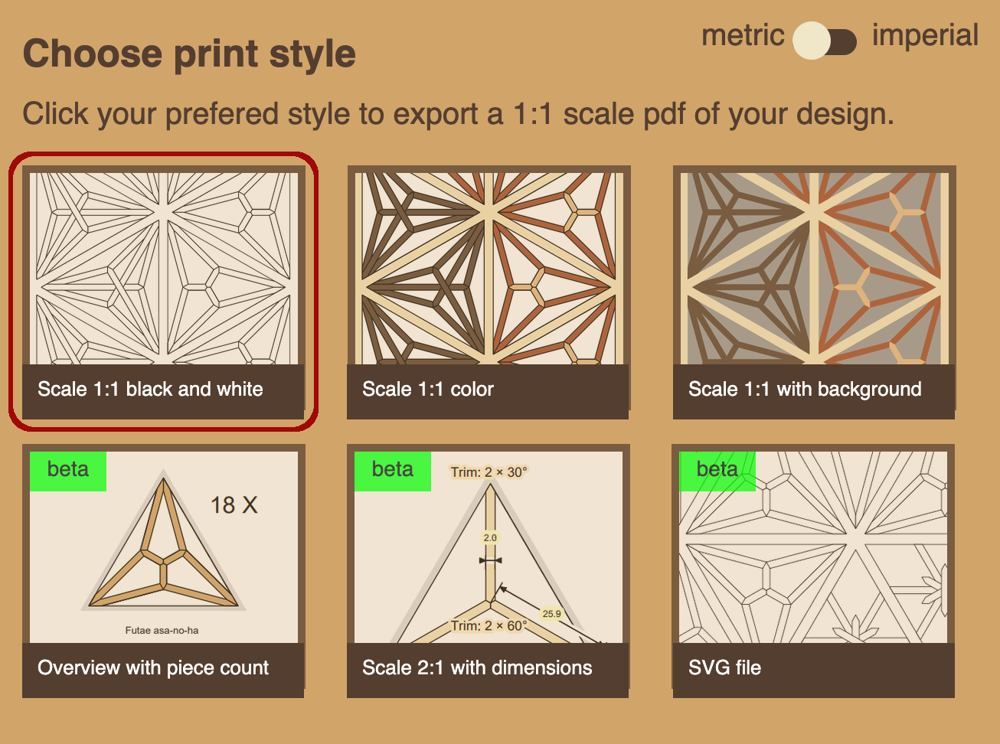
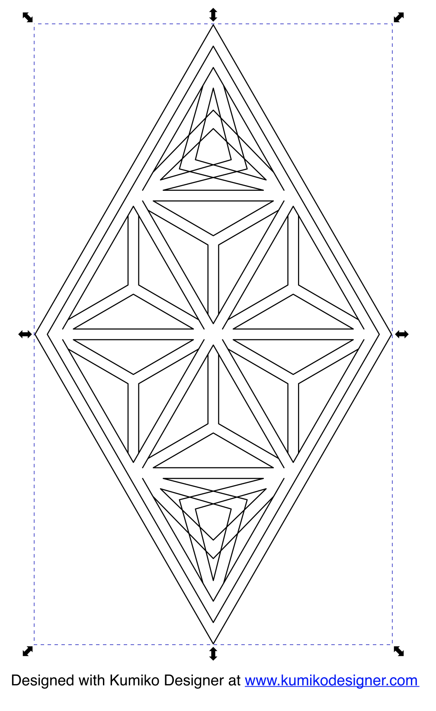
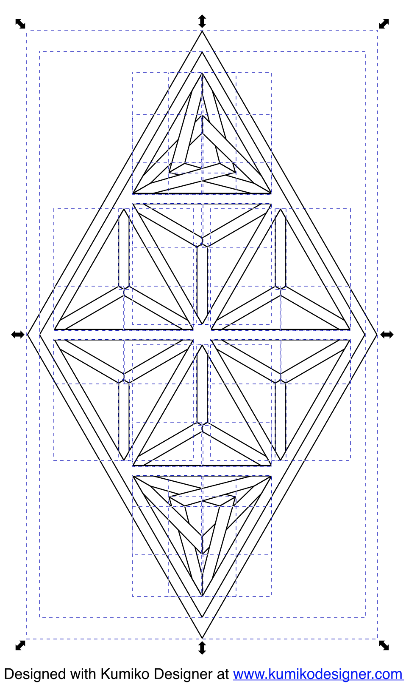
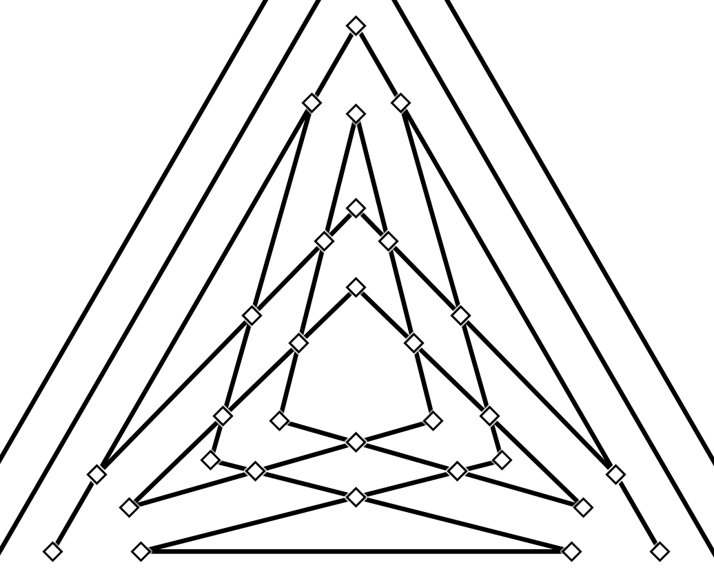
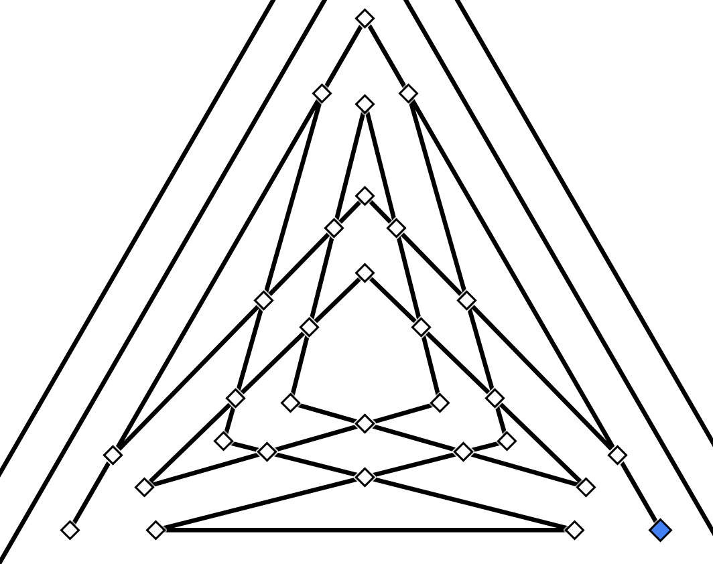
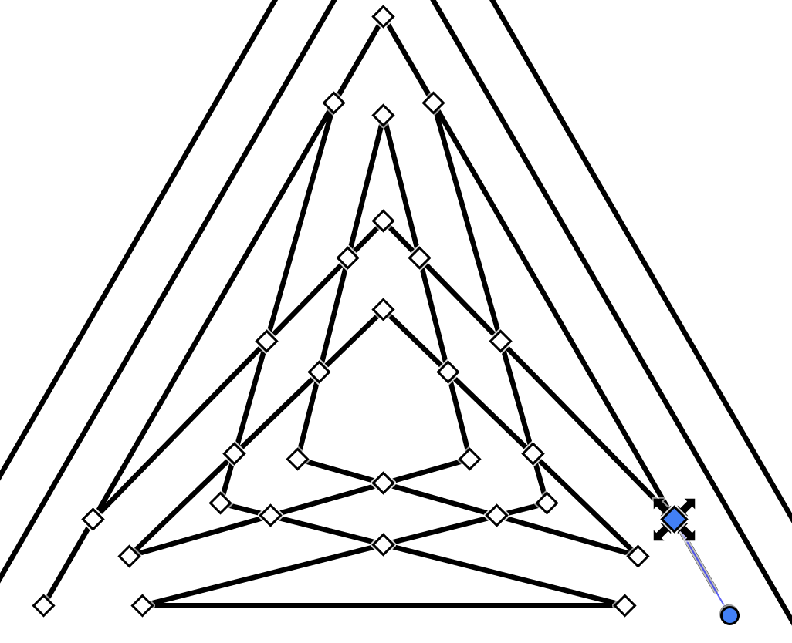
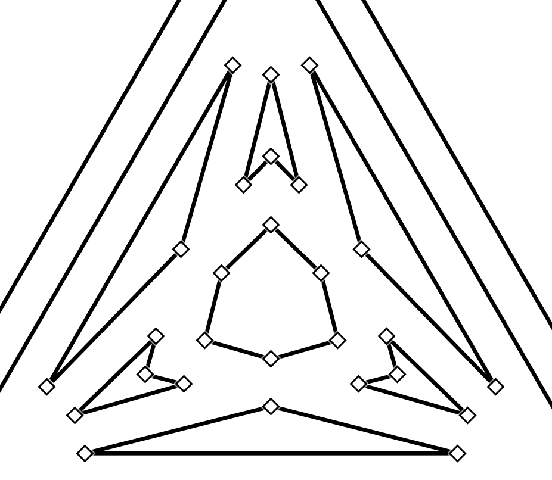
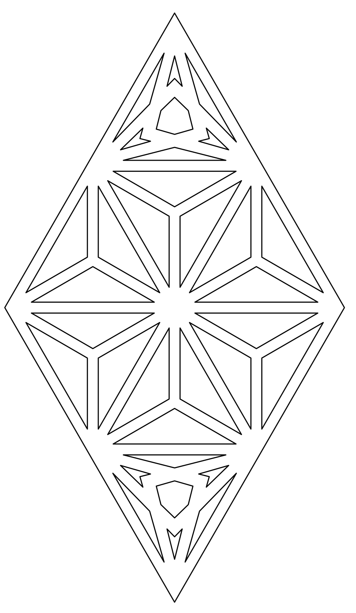
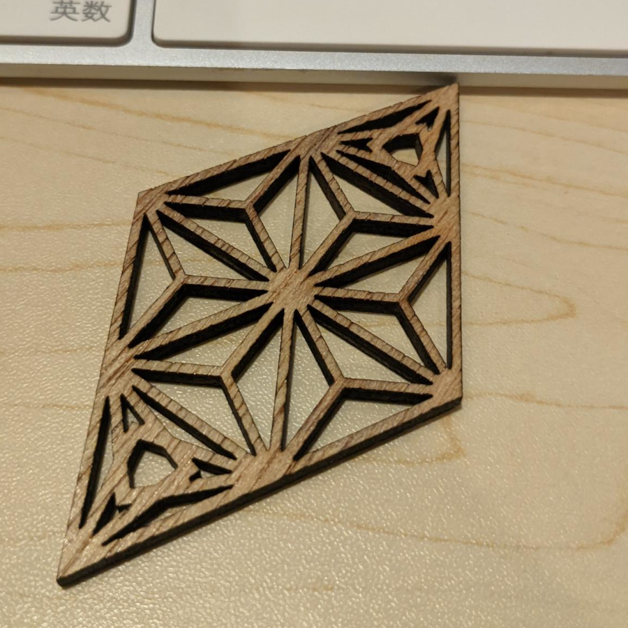

Used Software
- Webapp: https://www.kumikodesigner.com/
- Inkscape: https://inkscape.org/









If you want the Kumiko in a bigger sheet of wood, select the outside and set it to low power or engraving. This way, you don't cut the whole Kumiko out of the bigger sheet of wood.
Choose the right size and position, then start the cutting process.
